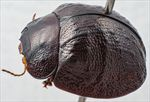
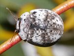
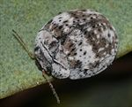
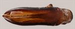
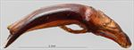
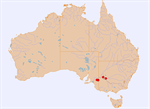

Click on images to enlarge


Male, Alawoona, South Australia


Female, Alawoona, South Australia


Male, Pinaroo, South Australia


Aedeagus, dorsal view (Mildura, New South Wales)


Aedeagus, lateral view (Mildura, New South Wales)


Distribution
Name
Trachymela sp. Ta115
Reference specimen
2017-043, Alawoona, South Australia.
Adult Description
Length: ♂ 5.9–7.1 mm (n=5), ♀ 5.4–7.1 mm (n=6).
Colouration:
- Head: dark reddish-brown, with black areas that almost always include the clypeus and the rim around eyes, less often extends across suture onto frons, more rarely black areas are absent; labrum yellowish-brown; mandibles often completely black, sometimes with dark reddish-brown patches laterally; antennomeres 1–3 light or mid-brown, 4–11 concolorous with 1–3, or more often, slightly darker, sometimes with outer segments tinged even darker in distal half.
- Pronotum: dark brown, concolorous with head, often with a small round black macula at each lateral edge of disc and another more laterally in centre of foveal area; the foveal macula is sometimes more extensive and may cover much of the foveal area, sometimes the anterior edge of pronotum at front of disc is also black.
- Scutellum: black.
- Elytra: dark brown, concolorous with pronotum, almost invariably with many black areas that coincide with pustules and raised wrinkles on the surface, a transversely aligned concentration of these is often situated behind antero-median depression and extends almost to margin, less often, black areas are more extensive and include non-elevated areas, rarely elytra are totally black; punctures concolorous with interstices; humeral callus black.
- Venter & Legs: venter black, with lateral parts of thoracic ventrites and abdominal ventrites sometimes slightly paler; inside surface of elytral epipleura black.
- Cuticular Wax: consists of a complex pattern of two shades – grey and light or mid brown – grey is present over most of the pronotum, often in a thick layer, with a light sprinkling of brown present along the posterior margin; on the elytra a broad band extending from the elytral suture to the lateral margin across the antero-median depression is grey, as is the lateral marginal area and an irregular patch across much of the discal area away from the suture in the posterior third and as small flecks between verrucae, primarily in the region adjacent to the elytral suture in the posterior third; two large spots on the head, one on each side of the central suture, are brown (often faintly so) as are many of the areas on the elytra not covered in grey; black verrucae appear as islands in the often thick layer of wax.
Morphology:
- Shape: body shape evenly and quite strongly rounded in both lateral and dorsal views, rather broad (W/L = 0.86–0.90), greatest height viewed laterally is considerably in front of middle of elytral margin.
- Head: relatively finely (pd ≈ 1.5–2 × ef) and quite evenly punctured; antennae short (AL/BL: ♂ 39–41%, ♀ 35–38%), filiform.
- Pronotum: almost evenly curved transversely, foveal depression absent or poorly developed, often with a relatively smooth, elevated pustule behind outer edge of eye, marginal area slightly elevated, discal area usually smooth with a small, unpunctured pustule near lateral edge, behind inner edge of eyes; puncturation on disc clearly impressed, punctures concolorous and similar in size to those on head, evenly and quite densely distributed, becoming much coarser from level of inner edge of eye to lateral margins, interstices smooth in discal area; thick front margins join thinner lateral margins in a smoothly rounded right-angle, with lateral margin almost straight for almost half the distance towards rear margin before curving smoothly and gradually towards rear margin, becoming noticeably thicker in posterior half.
- Scutellum: smooth and usually unpunctured, sometimes with a few poorly impressed punctures larger than those on pronotum.
- Elytra: surface evenly curved transversely over disc, then noticeably explanate over margin, strongly curved longitudinally, making for a noticeable discontinuity between pronotal and elytral surfaces; elytral surface is quite uneven with many elevated ridges and pustules, antero-median depression is shallow but emphasized by a transverse ridge that extends along its posterior edge, a similar but more fragmented transverse ridge is often present halfway between it and elytral apex; punctures moderate in size and distinct and relatively evenly distributed between the verrucae and other elevations; discrete verrucae, not or very loosely aligned in longitudinal series, are scattered mostly in front of antero-median depression and posterior half; posterior third of elytral suture carinate; interstices with a scatter of very fine punctures; surface continuous or very slightly discontinuous under humeral callus; vertical extension of epipleura considerable (HCE/PW = 0.38–0.42).
- Venter: prosternal process relatively broad, approximately parallel-sided, open or lightly closed anteriorly; setae scattered over prosternal process and mesoventrite; 2–3 setae on anterior and median trochanters, 3–5 on posterior trochanters; front edge of metaventrite beveled, truncate; posterior section of epipleura lightly setose, usually very short, sparse and difficult to discern, sometimes absent.
Male Genitalia (Aedeagus):
- Dimensions: small (LPE/BL = 26–30%), lanceolate.
- Dorsal view: sides of shaft almost parallel from basal sulcus to middle of ostium, sometimes converging fractionally so that greatest width is at basal sulcus, sometimes a little sinuate, converging and then diverging with greatest width at about middle of ostium, from middle of ostium sides converge smoothly and gradually towards apex, the rate of convergence increasing slightly near apex, sides tend to be much darker than most of dorsal surface; dorsal surface smoothly curved with a short and faint dorso-median channel, dorso-lateral channels well-defined and moderately long; ostium large, oval; dorsal ostial processes terminate well before spatula; tip very small.
- Lateral view: sides of shaft evenly and lightly curved throughout its length, thinning gradually towards apex from about middle of ostium, tip slightly deflexed.
Immature Stages
Unknown.
Similar species
With its very rounded body shape and the striking arrangement of cuticular wax, this species is unlikely to be confused with any other species in its area of occurrence.
Notes
- Appearance: With its thick layer of grey and brown cuticular wax on a very dark dorsal surface, Ta115 is one of the prettiest of the Trachymela.
- Distribution & Abundance: Ta115 occurs from Balranald in New South Wales to the Murray region of South Australia.
- Host Associations: Occurs on unspecified mallee species.
- Morphological Variation: The range of sizes in this species is unusually large, with the distribution of male sizes very similar to that of females. The shape of the aedeagus shows considerable variation, particularly in the extent of the widening around the centre of the ostium. The specimen from Mildura is at one extreme in this regard, with the widening very evident, but two specimens from the same location in South Australia differ substantially in this character, with one almost the same as the Mildura specimen and the other with the sides of the aedeagus in the middle section almost parallel.
Copyright © 2026. All rights reserved.